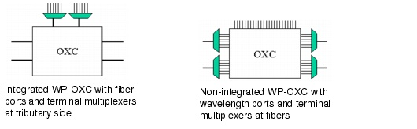
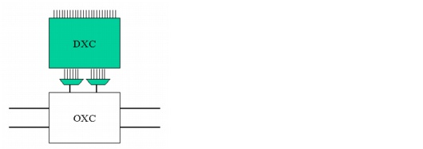

Concepts and Models > Node Modeling Capabilities in SP Guru Transport Planner > Optical Nodes: WP-OXC
Optical Nodes: WP-OXC
In addition to the non-blocking OXC, SP Guru Transport Planner supports another OXC type for switching traffic: the wavelength plane OXC (WP-OXC). A WP-OXC can switch within one wavelength plane only. It is used exclusively in transparent networks, which use the same type of WDM line system on all links. The number of wavelengths on the WDM line system defines the number of wavelength planes.
The main difference between the two OXC types is the way they deal with add/drop traffic. The non-blocking OXC, with an NxN switch matrix, is more flexible when combined with tunable transponders at the tributary side. In this case, the transponders can be tuned to the appropriate wavelength and switched towards any wavelength at the trunk side. In case of a WP-OXC, the tributary ports are bound to a specific wavelength plane (and thus can use fixed-wavelength transponders), which results in additional blocking.
For transparent transit traffic, the non-blocking OXC offers no additional flexibility over the WP-OXC. Because of the wavelength continuity constraint, the wavelength cannot be changed within the node without breaking out of the wavelength plane. Thus both OXC types must switch between the same wavelengths.
Because the cross-connect functionality is assumed to be the same for each wavelength plane, the discrete WP-OXCs are specified in terms of fiber ports. Therefore if an OXC has eight fiber ports, it has eight wavelength ports per wavelength plane.
The concept of "fiber ports" can also be physically realized by integrating the WDM terminal multiplexers in the OXC. In this configuration, the fibers are connected directly to the OXC instead of demultiplexing the wavelengths. When the terminal multiplexers are integrated, the OXC uses fiber ports and the trunk fibers can be directly interconnected to the OXC. In this case, external terminal multiplexers are required at the tributary side to multiplex the add/drop wavelengths towards the tributary fibers.
When the OXC terminal multiplexers are not integrated, the OXC uses wavelength ports and relies on external terminal multiplexers to (de)multiplex the wavelengths from the trunk fibers to the OXC ports.
Figure 2-20 Integrated and Non-Integrated WP-OXCs

WP-OXC Architectures
When you are working with a WP-OXC that has fiber ports and integrated terminal multiplexers, you can use an OXC fiber port in one of three ways:
- Trunk—The trunk fibers are directly interconnected with the OXC fiber ports.
- Tap—This is similar to a trunk fiber, but an additional tap is placed on the fiber (before the OXC), splitting the fiber in two directions: one towards the OXC and the other towards a terminal multiplexer. The multiplexer enables wavelengths to add/drop from this fiber without using the OXC.
- Trib—Each tributary fiber port allows add/drop of one wavelength per wavelength plane. Each port uses a terminal multiplexer to provide access to individual wavelengths.
The use of trunk, trib, and tap fiber ports on a WP-OXC allows for different node architectures, each with different degrees of flexibility (and thus blocking). These configurations are valid only in a WP-OXC with fiber ports and integrated terminal multiplexers.
Architecture 1: All Add/Drop Occurs through WP-OXC Tributary Fiber Ports
In this case, the OXC handles both transit and add/drop traffic. The flexibility of this solution is determined by the number of tributary fiber ports (and thus the number of tributary wavelengths per wavelength plane). A possible under-utilization of tributary fiber ports (and thus OXC) can occur if one wavelength is added/dropped substantially more than others. Hence, this aspect should be optimized by the wavelength assignment algorithm.
Figure 2-21 WP-OXC with All Add/Drop Occurring via Tributary Fiber Ports

Architecture 2: Use Taps on All Trunk Fibers
A second node architecture uses taps on all trunk fibers, so that all add/drop traffic (including regenerated and wavelength-converted pass-through traffic) can occur through the tap and no separate tributary fiber ports are required. In this case, the OXC is used for transparent pass-through of traffic only. This architecture typically requires fewer OXC fiber ports than the previous architecture (where the OXC tributary fiber ports handle the add/drop). Each trunk fiber that is tapped requires a WDM multiplexer; this means that the OXC requires more multiplexers than the previous architecture. Since the add/drop is hard-wired in this case (using taps), the DXC is used to offer flexibility to the add/drop traffic.
Figure 2-22 WP-OXC with All Add/Drop Occurring via Taps on Trunk Fibers
Architecture 3: Mixed Design (Combine Trunk/Tap/Tributary Fiber Ports)
A mixed design, which combines trunk, tap and tributary fiber ports, offers a trade-off cost and flexibility. Some trunk fiber ports (those with a lot of add/drop traffic) can use taps, while on other trunk fibers, add/drop can occur via OXC tributary fiber ports.
Figure 2-23 WP-OXC with Mixed Add/Drop via Tributary Fiber Ports and via Taps on Trunk Fibers
| Home © 1987-2007 OPNET Technologies, Inc. All Rights Reserved. This software may be covered by one or more U.S. Patents. See complete patent notice in the Legal Notices section. OPNET Support Center |